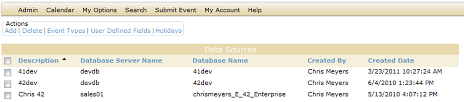
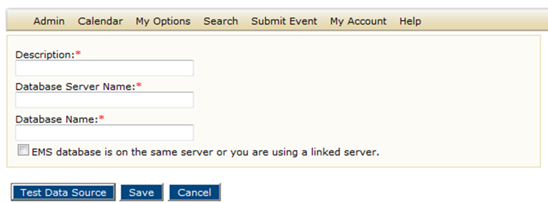
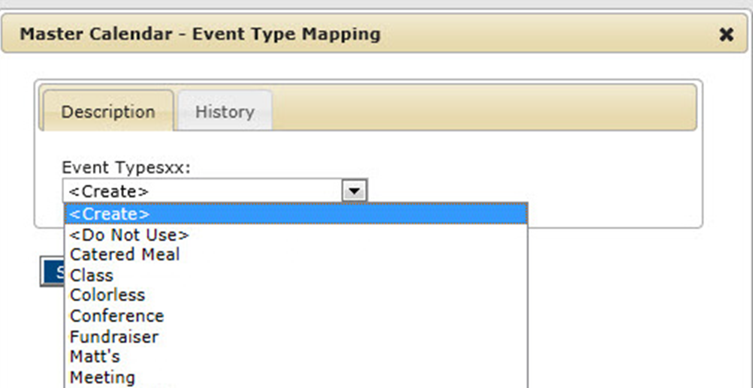
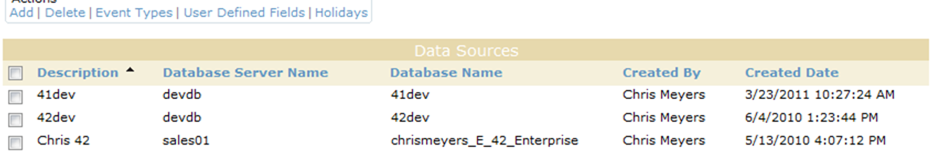
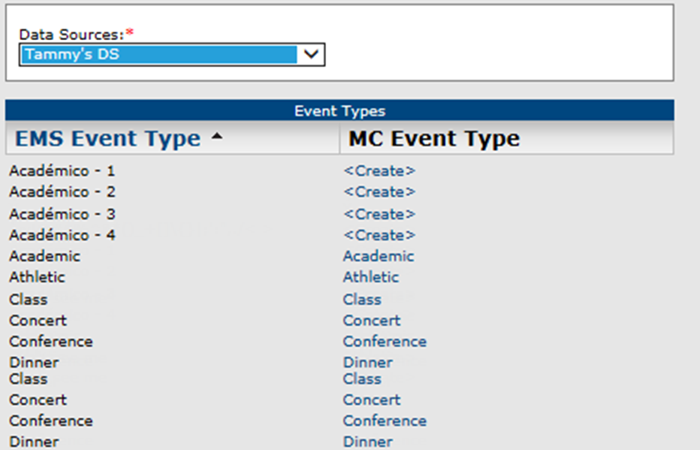
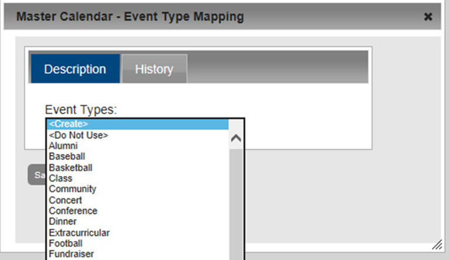
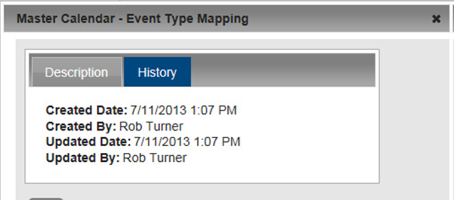
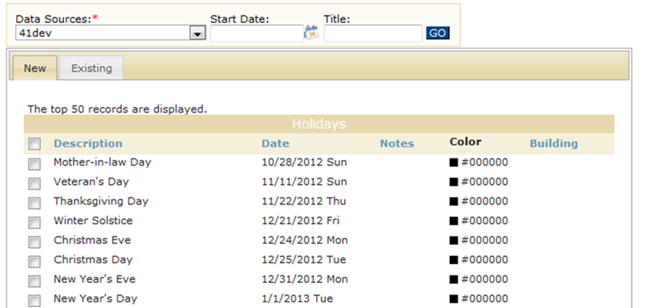
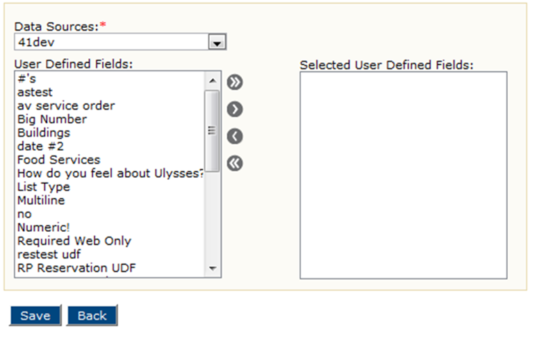

Connect to Data Sources
Data Sources consist of Event Types, Holidays, and User-Defined fields defined in your EMS implementation.
This topic will provide information that will allow you to:
- Add a Data Source
- Delete a Data Source
- Import EMS Event Types
- View the History for an Event Type Mapping
- Import EMS Holidays or Special Dates
- Select EMS User-Defined Fields (UDFs) for Importing
In EMS Master Calendar, as the site administrator, you have the option of setting up event types and holidays (special dates) from “scratch;” however, if you are an existing EMS customer who uses one of the EMS products, such as Campus, Desktop Client, Enterprise, Professional, Legal, and so on, this means that you have already configured this information for your EMS application. Rather than creating these items from scratch, if your organization has purchased the optional module, Master Calendar Data Connectors, you can follow the steps in this topic to perform a one-time import of event types and holidays from your EMS application into Master Calendar. You can import event types and holidays from one or more EMS databases to one or more calendars in Master Calendar. Also, at the data source level, you can select a high-level view of your user-defined fields (UDFs) in your EMS database, and you can then run a connector to import one or more selected UDFs and their associated answers into your Master Calendar database. Managing data sources in Master Calendar consists of adding data sources, deleting data sources, importing the event types, importing the holidays, and selecting the UDFs that are to be imported. You can also view the history of event type mapping between your EMS database and your Master Calendar database.
See Also:
- For setting up event types from “scratch,” see Work With Events.
- For setting up holidays (special dates) from “scratch,” see Managing Special Dates.
Add a Data Source
- On the Admin menu, point to Site Administration > Data Sources. The Data Sources page opens. This page lists all the currently available data sources in Master Calendar.

- Under Actions, click Add. The Adding a Data Source page opens.

- Add the information for the data source.
- Description—The name of the database into which you are importing the event types and/or holidays.
- Database Server Name—The name for the database server on which the EMS database from which you are importing the information resides.
- Database Name—The name of the EMS database from which you are importing the event types and/or holidays.
- If appropriate, select the option EMS database resides on the same server or you are using a linked server. You can obtain the database server name and the database name by logging in to the EMS client and then choosing Select File > Change Database, or you can work with your local Database Administrator to obtain the correct server name and database name.
- Click Test Data Source. If Master Calendar can connect to the specified EMS database, a message opens indicating that the “Connection succeeded.” Otherwise, the message indicates that the “Connection failed,” and provides a reason for the failure. You must make the necessary changes to the data connector, and test the connection again.
- After the message indicates that the “Connection succeeded,” click Save.
Delete a Data Source
When you a delete a data source, all connectors that use this data sources and associated events are deleted.
- On the Admin menu, point to Site Administration, and then click Data Sources. The Data Sources page opens. This page lists all the currently available data sources in Master Calendar.

- Select the data sources that you are deleting. To select all data sources on the currently opened page for deletion in a single step, select Description. If you have multiple pages of data sources to delete, you must repeat this entire process on each page.
- Under Actions, click Delete. A message opens, informing you that all connectors that use this data source and associated events are deleted and asking you if you are sure that you want to continue.
- Click OK in the message. A message opens indicating that all the selected data sources were successfully deleted.
- Click OK in the message. The Data Sources page is refreshed to show the remaining, if any, data sources in Master Calendar.
Import EMS Event Types
When you are importing event types from EMS into Master Calendar, you have three options. You can:
- Map an EMS event type to an existing Master Calendar event type.
- Create an EMS event type in Master Calendar if it doesn’t already exist.
- Indicate that you do not want to import the EMS event type.
- On the Admin menu, point to Site Administration, and then click Data Sources. The Data Sources page opens. This page lists all the currently available data sources in Master Calendar.

- Select the data source from which you are importing the event types and then, under Actions, click Event Types. The Event Types page opens. This page lists all the currently defined event types for the selected data source. It also shows the mapping for each event type, or whether it has been set to “Do Not Use.” If an EMS event type has not been mapped to a Master Calendar event type, and it has not been set to “Do Not Use,” then the “Create” option is displayed for it in the Master Calendar Event Type list.

- For any of the unmapped EMS event types, click Create to open a Master Calendar dialog box. The Description tab on this dialog box lists all the currently active Master Calendar event types. The “Do Not Use” option is also displayed on this list. If you do not see the Master Calendar event type to which you want to map the EMS event type, either it has not been created, or it is currently inactive in Master Calendar. To add a new event type, or to activate a currently inactive event type, see “To add an event type” or “To activate an event type”.

- On the list, select the Master Calendar event type to which you are mapping the EMS event type, or select Do Not Use.
- Optionally, for any of the currently mapped EMS event types, change the mapping, or set the mapping to “Do Not Use.” All EMS event types that you leave in a '<Create>' status will be created in Master Calendar when you save your event type mappings. On the Master Calendar main menu, select Admin > Configuration > Event Types to view a global list of all the event types that are being stored in your Master Calendar database, regardless of their data source.
- Click Save on the Master Calendar dialog box. The Master Calendar dialog box opens. You return to the Event Types page.
- Click Save on the Event Types page. A message opens asking you if you are sure that you want to save all the event types.
- Click OK in the message. The message closes. The page is refreshed to show the newly selected mapping for the EMS event type.
- Optionally, continue to one or both of the following:
View the History for an Event Type Mapping
The history for an event type mapping consists of the original creation date of the mapping, the name of the user who created the mapping, and the last date that the mapping was edited as well as the name of the user who last edited the mapping.
- On the Admin menu, point to Site Administration, and then click Data Sources. The Data Sources page opens. This page lists all the currently available data sources in Master Calendar.

- Select the data source from which you are viewing the history of the event mappings.
- Under Actions, click Event Types. The Event Types page opens. This page lists all the currently defined event types for the selected data source.

- Click the MC Event Type link for the mapping for which you are viewing the history. A Master Calendar dialog box opens. By default, the Description tab is the opened tab.

- Click the History tab to open it and view the history for the selected mapping.

Import EMS Holidays or Special Dates
Note: The term “holiday” is equivalent to the Master Calendar term “special date.”
- On the Admin menu, point to Site Administration, and then click Data Sources. The Data Sources page opens. This page lists all the currently available data sources in Master Calendar.

- Select the data source from which you are importing the holidays.
- Under Actions, click Holidays. The Holidays page open. By default, the New tab is the opened tab. This tab lists the records for up to the first 50 holidays that are defined in the selected data source and that have a date greater than or equal to the current day’s date.

- Optionally, to refine this list, do one or both of the following:
- In the Start Date field, enter a different start date.
- In the Title field, enter partial or complete search criteria for the holiday description. The search is limited to the exact order of the characters in the string; however, the search string is not case-sensitive and the search string can be found anywhere in the search results. For example, the search string “scout” returns holidays that contain either Scouting Day or Boy Scouts’ Day.
- Click Go. The page is refreshed to show the Holidays that meet your search criteria.
- Select the holidays that are to be imported from the selected data source, and then Add.To select all holidays on the currently opened page for importing in a single step, select Description. If you have multiple pages of holidays to import, you must repeat this entire process on each page. You will be prompted to confirm that you are sure you want to add all the selected holidays.
- Click OK in the message.
The message closes. You return to the Holidays page. When you import EMS holidays into your Master Calendar database, all the imported holidays are added to all the calendars in Master Calendar. You must manually delete the dates from the calendars on which you do not want the holidays to be displayed.
- Optionally, do one or both of the following:
- Click the Existing tab to open it and view the list of all the holidays that you have imported into Master Calendar.
- Continue to procedures below.
Select EMS User-Defined Fields (UDFs) for Importing
- On the Admin menu, point to Site Administration > Data Sources. The Data Sources page opens. This page lists all the currently available data sources in Master Calendar.

- Select the data source from which you are importing the UDFs.
- Under Actions, click User Defined Fields. The User Defined Fields page opens. On this page, you see only those UDFs that have the Field Applies To: Reservation configured within the EMS database. You can find this information in the EMS client under Configuration > Other > User Defined Fields.

- On the User Defined Fields list, select the UDF that is to be imported from the selected data source (CTRL-click to select multiple UDFs), and then click the Add button to move the UDFs to the Assigned list. To move all the UDFs in a single step, click the Add All button .
- Click Save.
- You must now run a connector to import the selected UDFs and their associated answers into your Master Calendar database.